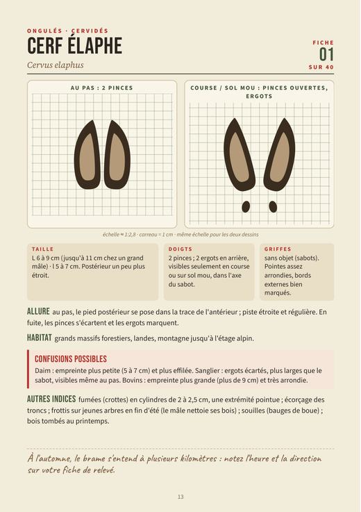
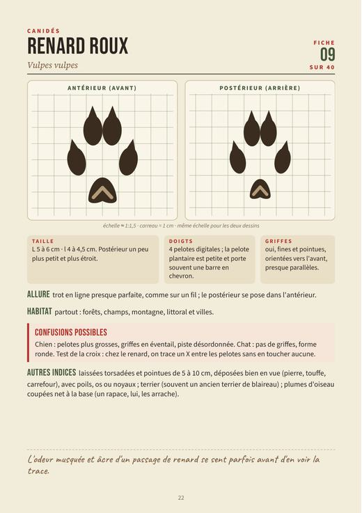

Ajouté au moment du paiement
Guide de terrain : lire les empreintes
Pour savoir qui est passé par là avant de le croiser. Un PDF A5 de 63 pages :
- 40 espèces de France et d'Europe : ongulés, canidés, félins, mustélidés, ours, rongeurs, oiseaux
- Empreintes dessinées sur quadrillage de 1 cm, patte avant et patte arrière à la même échelle
- Une clé d'identification : trois questions pour arriver à la bonne fiche
- Les autres indices : crottes, restes de repas, terriers, marques sur les arbres
- Une fiche de relevé à photocopier
+ 7,90 €au lieu de 9,90 €
Proposé sur la page de paiement, après le bouton de paiement : un clic pour l'ajouter, ou continuez sans (facturé en dollars US, ≈ 7,90 € au taux du jour). Vous avez déjà le guide de survie ? Le guide de terrain seul est ici.
 La clé d'identification
La clé d'identification

Fiche 01 · Cerf élaphe

Fiche 09 · Renard roux Fiche de relevé à photocopier
Fiche de relevé à photocopier
Trois étapes, rien à attendre